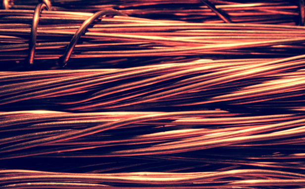
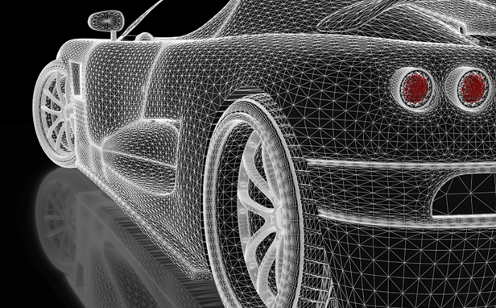
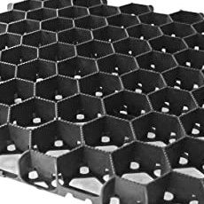
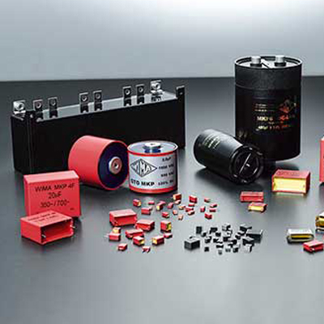
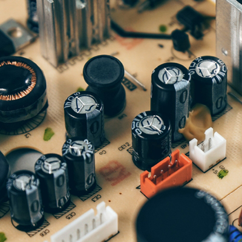
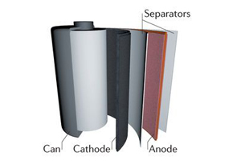
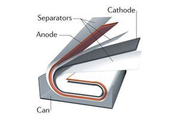
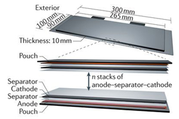

전선류
- 특성
-
- 전기전도성
- 내식성

- 동축케이블용
- 중앙의 구리선을 관상의 전도체가 둘러싸고 있는 전송선로는 외부로부터의 충격으로 인한 파손과 산화작용으로 인한 부식을 방지하기 위해 합성 수지와 필름등으로 코팅되어 있습니다. 당사의 알루미늄은 이러한 수지 또는 필름과 접합되어 동축케이블의 외부요인들로부터 보호하는 기능을 가집니다.
| 재질 | A1235 | A1050 |
|---|---|---|
| 밀도(kg/m^3) | 16 ~ 22 | 5 ~ 8 |
| 두께 | 100~350 um | 250~700 um |
가전/자동차
- 특성
-
- clad율
- 경량화
- 내부식성
- 열전도성


- type
-
- 에어컨 열교환기 Fin재용
- 실내외 에어컨에 사용되고 있는 열교환기는 Fin (AL)과 Tube(Cu)로 구성되어 있으며 주변의 열을 흡수 또는 방출하는 역할을 합니다. 열교환기를 응용하는 곳은 대표적으로 냉장고, 에어컨 등이 있다. 냉장고는 차가워진 냉매를 냉장고 내부의 공기와 만나게 하여, 냉장고 내부의 높은 열을 냉매쪽으로 전달 할 수 있도록 고안한 장치이다.
-
- 자동차 열교환기 Fin재용
- 자동차 내에 장착되는 라디에이터, 콘덴서, 히터 등 열교환기의 흡열 및 방열 성능을 높이기 위해 Fin 용도로 사용되고 있습니다. 액체나 기체 등의 열을 이동하는데 사용한다. 열교환기는 가열 또는 냉각 용도로 사용된다. 넓은 의미로는 가열기, 냉각기, 응축기 등도 포함되지만 보통은 열을 회수하여 고온의 유체 냉각을 목적으로 사용한다.
전기전자류
- 특성
-
- 전기전도성
- 화학에칭성
소형FILM콘덴서의 고용량화를 위하여 4.3um의 알루미늄 호일을 개발하였으며, 표면적을 넓혀 용량을 높이는 전해콘덴서용으로 에칭을 통하여 용량을 높일 수 있는 알루미늄 호일을 생산하고 있습니다.
-

- Film콘덴서용
- Film 콘덴서는 정전용량의 저손실/고절연 특성을 가지며, AV기기 및 정보통신기기 등 폭 넓게 사용되고 있는 Film 콘덴서용 제품입니다. 두 개의 도체를 마주 보게 한 것으로 특히 회로소자로 사용하는 것을 말한다. 도체의 전하는 두 도체의 전위차에 비례합니다.
-

- 전해콘덴서용
- 서로 마주본 2개의 전극 사이에 유전체를 끼워 정전 용량을 갖게 한 장치인 전해콘덴서의 전극으로 알루미늄 호일이 사용되고 있습니다. 콘덴서는 직류는 흐르지 못하게 하지만 교류는 통하게 하며 용량이 클수록, 그리고 주파수가 높을수록 잘 통하게 된다.
2차전지소재
- 특성
-
- 전기전도성
- 가공적합성
충전과 방전을 반복할 수 있는 2차전지의 양극집전체에 사용되는 알루미늄박은 전기화학 반응에 의해 생성된 전자를 모아서 전기화학 반응에 필요한 전자를 공급합니다. 2차 전지는 배전 네트워크를 안정화하기 위해 연결된 버튼 셀에서 메가와트 시스템에 이르기까지 다양한 모양과 크기로 생산됩니다.
-
- cylindrical
- 가장 대중화된 형태의 2차전 지형태이며 2차전지를 구성하 는 양극 박에는 알루미늄 (AL) 이 음극 박엔 구리(Cu)가 사용 되고 있습니다. 가장 보편적인 전지는 니카드전지(니켈·카드뮴전지)로 가장 대중화된 전지형태입니다.
- 
-
- prismatic
- 최근 전자제품, 하이브리드 자 동차의 소재로 많이 쓰이고 있 는 2차전지 형태 입니다. 양극 박에는 알루미늄 (AL) 이 음극 박엔 구리(Cu)가 사용됩니다. 전압이 높고 출력이 강하며, 부피가 크고 무거워 자동차용으로 사용 됩니다.
- 
-
- pouch
- Pouch 형태는 2차전지를 보호 하는 포장재로써 형상을 유지시키며, 외부 전자파로부 터 내용물을 보호하 는 기능을 가집니다. 플라스틱과 접착제, 알루미늄을 층층이 쌓아서 만들지만, 두께는 소형이 0.1mm, 중대형이 0.15mm에 불과하다.
-
- 